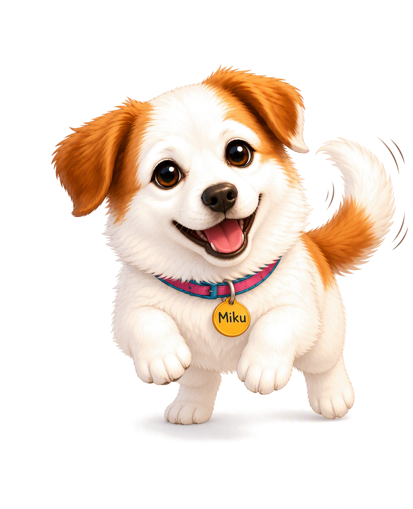

Explain
Put what you think you know into your own words. Miku only receives what you actually teach.
Find the gaps in your own thinking.
Miku is a pupil, not a tutor. You teach it what you learned, predict what it now understands, then watch its mistakes reveal where your explanation is incomplete.

The demo uses one question — Why do we have seasons? — to show the full learning loop from first explanation to re-teaching.
Instead of correcting the learner immediately, Miku makes their explanation do the work.
Each step externalises a different part of metacognition: explaining a mental model, estimating what that model can support, seeing where it fails, and deliberately revising it.
Put what you think you know into your own words. Miku only receives what you actually teach.
Your explanation becomes a visible network of concepts and relationships rather than a hidden chat history.
Before the quiz, decide where Miku will succeed and fail. Commit to a judgment before seeing the outcome.
Use the mismatch between prediction and performance to decide what needs to be clarified, connected or re-taught.
A learner may feel that they “know seasons” while missing the relationship between tilt, sunlight and orbit. Miku turns those relationships into something visible enough to question.
The goal is not to label a learner as right or wrong. It is to show where an explanation is connected, where it is thin, and how it changes after new evidence.
Miku does not try to wrap every learning theory into one product. The prototype focuses on four ideas that directly change the interaction.
The learner must generate an explanation rather than recognise one. Missing links become harder to hide when the idea has to be produced in their own words.
Chi et al., 1989; 1994Miku is positioned as someone to help, not an authority evaluating the learner. Its mistakes become problems to repair rather than marks against the learner.
Chase, Chin, Oppezzo & Schwartz, 2009Learners commit to what they think Miku knows before the quiz. The prediction can then be compared with what actually happens.
Nelson & Narens, 1990Instead of supplying a correction immediately, Miku lets a learner encounter the consequences of an incomplete explanation and then reconstruct it.
Posner, Strike, Hewson & Gertzog, 1982Miku takes inspiration from Betty's Brain, a teachable-agent environment developed at Vanderbilt University. In Betty's Brain, students teach an agent by building a causal map, then use its quiz performance to inspect the quality of that map.
Miku keeps the same bargain — the pupil only knows what you taught it — but uses conversation and a generated knowledge structure so the learner has to articulate the explanation in their own words.
The prototype is useful only if the interaction produces observable changes in how learners monitor and revise their understanding. These are the first things I would test in a small pilot.
When answers are cheap, judgment becomes scarce.
Generative AI removes much of the friction that used to force learners to explain, struggle and repair an idea. Miku is an experiment in designing that cognitive work back into the interaction — deliberately.

The project began with a simple question: if AI can answer almost anything for a learner, what kind of interaction would still require the learner to do the thinking?